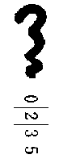

敗戦後一年目のこの夏、三千七百尺の高地の避暑地の、ホテルのヴェランダや霧の夜の別荘の炉辺でよく話題にのぼる老人があった。
それは輝くばかりの美しい白髪をいただき鶴のように清く痩せた、老年のゲエテ、リスト、パデレウスキなどの Phenotype（顕型）に属する壮厳な容貌をもった、六十歳ばかりの老人だが、このような霊性を帯びた深い表情が日本人の顔に
服装も非常に印象的で、生地はいまから二十年ほど前、手織木綿のような手固さと渋さを愛された英国のウォーステッドという古風なもの、フォルムも大正のよほど早いころの流行でそれはともかく、着方にどこがどうとはっきりと指摘できぬ何ともいえぬもどかしい感じがある。アフリカの土人に洋服を着せると、どんなにきちんと着付けてやってもいつの間にか微妙に着崩してしまうということだが、この老人の着方にも、ややそれに近い、なんとなくぴったりしないところがあった。
この老人は、東京の空襲で一家爆死した
阪井有高というのは華族の中でも有数な資産家で、健康も知恵もありあまるのに、どんな会社にも事業にも関係せず、どのような趣味も特技も持たず、完全な安逸と無為のうちに生涯の幕を閉じたオブロモフ式の徹底的な遊民だったが、その最後はちょっと前例のないほど異変的なものだった。
細君の
ホテルなどでは、たぶん長らく外国にいて、この四月の欧州最後の引揚船で帰ってきたひとなのだろうというところへ意見が落ちつきかけたが、それにしてはあの大正式のスタイルとみょうな着ざまはどうしたものだと一人がいいだしたので、この推測もあやしくなってきた。
外廊や炉辺でそういう噂が焦げつくようになったある日の午後、老人がめずらしく一人でホテルのグリルへやってきて、給仕に、Spiter というむずかしい英語で昼食を命じた。なるほど昼食という意味ではあるが、それは五百年ぐらい前に使われ、いまはまったく死語になっている言葉であった。
もちろん給仕は死語など了解しようわけはなく、だいたい察してランチを持って行くと、その老人は十六世紀の
それでグリルにいた一人がすばやくすり寄って行って会話のきっかけをつかんだ。
言語は非常に
それ以来その老人はけっして一人で出歩かないようになった。ときたまバアへアペリチフを飲みにくるが、いつも青年がいっしょで、だれか老人に話しかけると、なんとなく割ってはいって返事をみなひきうけてしまう。その青年が老人に同伴しているのは、老人に話しかけられるのを防ぐためだということがわかった。
そういう不分明な、どこか漠とした事情がそれからもいろいろと重なったので、その老人は避暑地の前景の中で一種の
八月も末に近い霧の深い夕方、二人はいつものようにホテルのバアへやってきたが、老人はバルザックを一杯飲んで先に帰り、祖父江が煙草を吸いながらヴェランダへ掛けにきた。そのときいつもの連中が五人ばかり残っていたが、こういうこともあろうかと待ちかまえていたところだったので、そのうちのひとりが辞令ぬきで祖父江にたずねた。
「祖父江さん、いつもあなたといっしょにいられる、あの立派なご老人はどういうかたなのですか。お
祖父江は薄闇の籐椅子に掛け、もう赤く光りはじめた煙草の火を見つめていたが、まもなく顔をあげるとこんなことをいった。
「たぶんみなさんは、あのあやしげな老人はいったいなにものだと、おたずねになっていられるのだと思いますが、あなたがたのご満足を得るようにするには、あの老人の再生のお話をするのがいちばん手っとり早いようです」
「なるほど、あの老人はこんど公民権を回復した一人だったのですね」
「いや、わたしの再生というのは、墓の下から出て来たという意味です」
「墓というと」
「人を葬る、あの墓のことです」
なんともいいようのない不快な感じに襲われ、みないちように身ぶるいした。ホテルの芝生に霧が川のように流れ、たしかにうすら寒い夕方でもあった。
「
「あの復讐綺談はわたしも少年のころに読みました。あの話にはこしらえものにつきもののこじつけや矛盾があって、それが一種の救いになっていますが、あのひとの過去には、残念ながらそういうものは一つもありませんでした」
「それで、あの人はいま幸福なのですか」
「たしかに幸福だともいえるのでしょうが、かすかな灯明がいっそう闇を暗くし、
と約束して帰って行った。
それから三日後、祖父江は、細かく書きこんだノートを持ってやってきた。それでみなはヴェランダからＪ子爵の別荘へ移り、炉辺の安楽椅子に沈みこんでこころゆくまでその話をきいた。祖父江がノートに書きつけてきたのは、次のような数奇な物語であった。
わたしが阪井有高とつきあうようになったのは、今年から数えるとちょうど二十九年前の大正六年の夏のことでした。
まだみなさんのご記憶にありましょうが、左団次の自由劇場以来、われわれの仲間で翻訳劇の私演会を催すことが流行し、近衛秀麿や三島章道や土方与志などの「芽生座」がまずトップを切りましたが、大正の終りごろになると、フランスのアヴァン・ギャルド運動に刺戟されてまた新しく勢いをもりかえしてきました。
阪井などはその一方の旗頭で、坪内さんの講義をきくために帝大の法科と早稲田の文科をかけもちしたくらいでしたが、大正六年の夏「ハムレット」の新演出で、日本の前衛運動の最初ののろしをあげようということになり、三カ月の暑中休暇を利用し阪井の別荘に合宿して猛練習をはじめましたが、ハムレットは小松顕正、クローデアス王が阪井、オフィーリヤが後で阪井の細君となった小松の許嫁の西洞院琴子、わたしがハムレットの親友ホレーショーと、まあ大体こういう配役でした。
小松というのはちょっとめずらしい生真面目な男で、じぶんがハムレットをやるときまると、死んだおやじの書庫からエリザベス朝に関する文献をありたけひきずりだし、建築から服飾、工芸品、装身具、食器、料理、作法、狩猟、遊戯というぐあいに、当時の風俗と日常生活の一般を細大洩らさずしらべあげ、そのうえマンツァーメスの「
「ハムレット」が書かれた時代のようすが一通り頭へはいると、こんどはハムレットの生国のデンマークの研究にかかり、デンマーク公使館の、ヌルデンシェルトから参考書を借りだし、十六世紀頃の法律、制度、文化、国民的気質、日常生活と、やすむひまなく追求をつづけ、ようやくのことでそのほうが一段落つくと、いよいよ本腰をすえて脚本の解釈にかかり、ダイトンやカッセルの注釈本を参考にして、So とか Such とか That とか、そんな簡単な言葉についてもいちいちアクションをかんがえる。そういうあいだにもウィリアム・アーヴィングをはじめ、ダヴィット・ギァーリック、フォーブス・ロバートソン、ジョン・バリモア、セイッシイとあらゆる名優のハムレットの舞台写真を集め、
さっきもお話しましたように、落合の小松の邸はいくつも
いよいよ私演会の当日になると、この新演出が評判になって有名な劇評家や一流新聞の記者までつめかけ、予想以上の大成功のうちにたいした穴をあけずに進行しましたが、いよいよ最後の「城内大広間」の場にかかるとまもなく思いがけない事件が起りました。
大詰の五幕二場はご承知のように、「オフィーリヤの兄レーヤーチーズと、ハムレットの決闘、並びにデンマークの王家の絶滅」という悲劇のクライマックスに達するのですが、この場面の装置は舞台正面は樫の
クローデアス王はこの決闘にかこつけてハムレットを殺してしまうつもりで、レーヤーチーズにひそかに毒を塗った剣を渡してあるがハムレットはそんなことは知らない。
一回、二回ともレーヤーチーズがかすり傷を受け、第三回目、いよいよはげしい接戦になり、ハムレットがだんだん上手へさがる。レーヤーチーズがつけ廻し、つづけざまに長手の突きをやる。ハムレットは切先であしらい、幕に背を
わたしはホレーショーの役なので、廷臣と並んで下手の奥に立っていましたが、ハムレットが上手の垂幕のところでレーヤーチーズの
われわれはちょっと度胆をぬかれましたけれども、小松の即興的な思いつきで、芝居をひとつ増やしたのだろうと考えつき、ああそうかと思って笑いながら見ていましたが、どうしたのかハムレットはいっこうに出て来ません。
われわれのほうは笑ってもいいのですが、決闘の相手に消えられたレーヤーチーズのあわて方といったらない。幕のほうへ向って、さあ出て来いとか、隠れるのは卑怯であろうとか、出鱈目なセリフをいいながら、ひとりで暴れていました。そのうちにとうとうもちきれなくなったとみえ、やあやあ、といいながらじぶんでも幕のうしろへ入りこんで行きましたが、すぐ真青な顔で舞台へ飛びだしてきて、
「たいへんだァ、小松が死んでいる」とふるえながら幕のほうを指さしました。
もう芝居どころでなく、王も妃も廷臣もいっしょになって上手へ駆けだし、幕のうしろへ入ってみますと、小松は四十尺も下の玄関のそばにうつ伏せになり、頭のまわりの敷石に真赤な血潮が磯ぎんちゃくでもうちつけたようにどろりとねばりついていました。
アングロ・ロマネスクの建築は伸びあがったような高いスタイルにするため、一階ずつ階高をもたせるのが特徴で、二階といってもこれがむやみに高いので、万一にもころげだしたりしないように芝居のある間は絶対に舞台の窓をあけないことにしていたのですが、なにしろ非常に暑い日だったので、うっかり忘れてだれかが開けてしまったものと見えます。小松はそんなことは知らないから、夢中になって決闘しているうちに、われともなく幕に凭れかかったので、そのまま窓からころげだしたというわけなのですが、運悪く窓の下は
さっそく近所の病院へかつぎこみましたが、なかなかの重態で、四日ばかりは生死の境を
すばやく手をうったので、この事件は
「あのとき、阪井のクローデアス王が王座から降りて下手の幕のうしろへ入ったがあれはなにをしに行ったのかね」
と、ふとそんなことをいいました。
「阪井が……それは、どんな時」
「小松のハムレットが幕といっしょによろけるすこし前」
「そして、いつ出てきた」
「ほんの五分ぐらいの間のことだ。レーヤーチーズが幕のうしろへ入る前にもう戻っていた。君は知らなかったの」
「知らなかった」
阪井のクローデアス王の王座は
阪井が幕のうしろへ水でも飲みに入ったのかとも考えられますが、小松が幕の中へよろけこむ一瞬前、ショックでも受けたようにぎくっと頭をのめらせたことを思いあわせ、なにかみょうな気がしないでもありませんでした。しかしいまおはなししましたように、正面奥の壁は腰板がそのままむきだしになっているので、舞台を露骨に横切る以外に上手へ行けるわけはないから、阪井が下手の幕のうしろに入ったということが上手にいた小松の墜落に関係があろうとはかんがえられませんが、そのころ阪井はいつもにやにやと薄笑いをし、なんともいえぬ底気味の悪いところがあって、阪井と話をしていると、ときどきなんの理由もなく、ぞっと戦慄を感じるようなことがよくありました。阪井とわたしは友人といってもごく浅いつきあいで、この芝居に駆りだされたという程度の関係でしたので、そんな不快を忍ばなければならぬわけはなく、それとなく遠のいて間もなく交際を断ってしまいました。
わたしが大学に居りますころ、天尾四郎や小酒井などの影響を受けて差異心理学や人格心理学の研究をしているうちにロバックの性格学に興味を持つようになり、本式に勉強するつもりで英国へまいりました。一九二五年の春、二十六歳のときでした。
その後、七年ばかりの間、オールボートについて真面目にやっていましたが、郡虎彦が演出したジェミエの「修善寺物語」を見てから、それに刺戟されてまたぞろ芝居が病みつきになり、舞台美術の研究をしたりアヴァン・ギャルドの私演会に出演したりして遊び暮しているうち、昭和九年の春、阪井が細君の琴子と、そのころ十三歳になった娘の鮎子をつれぶらりとロンドンへやってきました。
阪井とは十年ぶりに逢ったわけでしたが、見ちがえるように福々と肥り、安定したいい表情になっていましたが、性格学の研究で養われた眼で見ると、阪井の
あまり専門的になることは避けますが、個性の進展というものは、要するにその先祖の一貫した全道程を表現しているもので、血統の上に先祖の影響が強く残っているものなのです。いいかえれば人間というものは長い家族史の
ところがおどろいたことには、阪井の細君がまた歴然たる犯罪型なのです。琴子の耳は耳輪の上部が折れ曲っているモーレル氏型耳の典型的なやつで、こういう耳の持主を情緒的犯罪型といい犯罪を情緒で美化して陶酔するという非常に厄介な性格で、いってみればこの上もない好一対の悪夫婦というところなのです。
阪井も阪井の細君ももともと好かないやつらだったのでいよいよ相手にする気もなくなりましたが、そういうことがわかると鮎子という娘の不幸な行末がまざまざと見えだし、かわいそうでたまらないので、ケンシントン・ガーデンやグリンパークへ散歩に行ったりストランドへ映画を見に連れて行ったりしました。翌年の春、阪井の一家は二カ月ばかりの予定で
それからわたしの生活などはかくべつおはなしするに足るようなことはありません。父が残した資産はもちろん、東京の邸まで売らせて送金させ、
そのうちに日本の状態が
「お久しゅう、あなた、いつ日本へお帰りになって」とだれかが声をかけました。顔をあげてみると、ヴァジン・ウールのしゃれたスキー服を着た二十二、三の娘なんですが、そのスキー服というのは一九三九年の冬の「スノオ・ファッション」に
「お忘れになって。わたくし、ロンドンでいつもあなたに、べたべたくっついて歩いたあのへんな娘よ。阪井鮎子ですのよ」
そういわれれば、なるほどそうにちがいない。あのころは青んぶくれの見るかげもない貧相な小娘でしたが、どういう飛躍をとげたものか、琴子の若いころそっくりな、まるで
「いまお困りになっていらっしゃるんじゃないのかしら。そうだったら、あたしたちお助けしてあげられてよ。むかしお世話になったこともあるのですから、ご遠慮には及びませんのよ。これからいっしょに家へいらっしゃらないこと。父も母もおりますから」とそんなことをずけずけというのです。
生意気なやつだと思いましたが、わたしの困りかたといったらないので、むかしのよしみでいくらかでも助力してもらえたらと鮎子にくっついて行くことにしました。
阪井の邸は赤坂表町の坂下にあって、ポーチの薄暗い外灯がぼんやり車寄せを照らしているほか、どこからも灯ひとつ洩れないひどく閉めこんだ陰気くさい構えでした。まもなく阪井と細君が出てきましたが、十一年前にロンドンへ来たころは福々しいくらいに肥っていたのがとげとげと痩せ、流動的な明るい快活さも、充ち足りたような
細君の琴子のほうは阪井と反対に見るから嫌悪の情を催すような不快な肥満のしかたをし、鈍重なそのくせたえず動揺しているような不安定なようすをしていました。阪井はわたしなどになんの興味も感じないらしく、冷淡な気のない応対をしていましたが、そのうちに、
「君は精神病理を専門に研究したということだが、失礼だが、どの程度のものなんだね」とたずねました。わたしは阪井にとりついていくらかでも借りだしたい下心があるので、性格学という学問について、オールボートの人格研究法の十五項……社会的フレームワークによる分析、人相学的研究、とりわけ、その人間が一日に何度笑うかというような各種行為の
「学問というものの本質はもともと貴族的なものなんでしょう。生活なんかとやりあってせっかくの才能を失落させてしまうのはあたし不賛成よ。ねえ、そうなさい。あたしこころからおすすめするわ」と熱心にすすめだしました。鮎子は鮎子で、いかがわしいほど愛情的なようすでわたしの肩に手をかけながら、
「あなたのお顔、スウチンの『死せる
わたしはあまり人好きのするほうではないし、阪井や阪井の細君が学問のポルテエジュを希望するような高雅な心情を持っているとも思えません。たったいちどの説明で阪井の一家がどうして急にこんな好意をしめしはじめたのか、極端に利己的な阪井の平素を思いあわせると、なんとなくうさん臭い気がしないでもありませんでしたが、わたしとしては、ただ当面のひどい貧乏からぬけだしたいだけでいっぱいで、深くかんがえもせずに、むしろよろこんで阪井の保護に身を任せることにしました。
そういうわけで、わたしはその翌日からペルチヒ風の贅沢な部屋におさまり、いささか過度な鮎子の奉仕を受けながら著述の真似事をすることになりましたが、見ていると、鮎子というのはいちどこうと独断するとどうしても思想をかえることができない狂信者型で、幻視と幻聴があり意識を凝固させると自在に見神ができるという霊媒者的素質をもったふしぎな娘であることがわかりました。したがって日常の行動にも、常識で判断できないような奇抜なことが多く、とりわけ迷信ぶかいことはたいへんなもので、スプーンの外側に絶対に唇を触れないとか、階段はかならず左足からのぼりはじめるとか、鮎子にとってはそれはいちいち相当な理由があるのですが、そういうあやしげなフレームの中で生活をしているわけですから、愛情呈示の様式もおよそ人間ばなれのしたもので、羞恥とか
こういう過敏な娘なので、わたしが著述に熱意のないことをかんたんに見ぬいてしまいましたが、鮎子としてはむしろこのほうが気にいったらしく、それ以来、毎日なにか理由をつけて遊びにひきだすようになりました。阪井は子供の教育ということにどんなルーズなかんがえをもっているのか知りませんが、鮎子のハンドバッグにはいつもびっくりするほどの金高が入っているばかりでなく、非合法的なレストランや秘密のバア、
二月すえ神田へ焼夷弾が落ちた日、二人で逗子のさる家のワイルド・パーティでさんざんに踊り、帰れなくなってその家へ泊りこむことになりましたが、わたしがパジャマに着替えていますと、鮎子が眠りからさめきらぬ子供のような顔つきで入ってきて、
「いまマリウスの霊が来たわ」とぼんやりした声でいいました。
いいわすれましたがマリウスの霊というのはときどき定期的にあらわれて鮎子の運命を予言し、いろいろと助言してくれる親切な霊なのだそうで、これに見舞われると、鮎子はひとがちがったようなしっとりと情味のある娘になるのですが、その晩もまたそんなふうで、その家のマダムに借りた足まで隠れてしまうようなだぶだぶの白の
こういうわけで二人の関係に悪い深みがつき、阪井の友情を裏切ったかたちになりましたが、阪井も阪井の細君もはじめっから二人の関係を許容しているふうで、とがめだてしないばかりか、むしろ奨励するようなようすさえ見えました。
二人がそういう関係になってから一と月ほどたった四月のはじめのある日、阪井がじぶんの書斎へわたしを呼んでだしぬけにこんなことをいいました。
「祖父江君、君は小松がまだ生きていることを知っているかね」
「小松って、どの小松」
「三十年ばかり前にハムレットをやったあの小松顕正のことだよ」
これはまったく初耳だったので、わたしもおどろいて、
「へえ、それは知らなかった。それでいまはどうしている」とたずねますと、阪井はとぼけた顔で、
「小松が気がちがったことは君も知っているだろうが、それはずいぶんへんなものだったんだよ。意識はとりもどしたが、小松顕正の過去の記憶は、全部消失してハムレットの記憶しか残っていないんだ。追想喪失症と精神乖離症の合併とでもいうところかね、君は専門だからよく知っているだろうが、あれ以来小松は落合の邸で三十年もハムレットになりきったまま生きていたんだ。それで、君にひとつおねがいがあるんだが」
阪井の依頼というのは、なにしろこんな時世だから、出来るなら解放するほうがどちらのためにもいいのだが、
小松顕正は端正な容貌と明晰な頭脳をもった秀抜な青年で、われわれ同年代一般の憧憬的人物だったのです。とりわけわたしなどはひそかに女性的な愛情さえ感じたくらいで、その小松が三十年近くもそんな陰惨な生活をしていたということを聞きますと、なんともいえないほど気の毒になって、解放できるものなら解放してやりたくなりました。
「それは気の毒な話だな。いいとも
「そんなことはなんでもない」
「それはありがとう。執事の北山にも君を新しく傭った看護夫だということにしておくから、そのへんも含んでおいてくれたまえ」
翌朝早く家を出てバスで落合まで行き、聖母病院の前の通りを入って行くと、突当りに小松の邸が見えだしました。数えてみますとあれからちょうど二十八年たっているわけでしたが、家の正面がすこし汚れ、車寄せのそばに防空壕が掘ってあるほかなにもかもむかしどおりになっていました。呼鈴をおしますと阪井から電話で通じてあったとみえ、執事の北山が玄関へ出てきました。二十八年前私演会に駆り出され、ポローニヤスをつとめたころのおもかげはどこにもなく、むかしはいかめしかった口髭も長い顎髯も真っ白になって、そのままでポローニヤスの役がつとまりそうなマスクでした。
北山はわたしを応接間へ通すと仔細らしい顔で経歴などを聞いてから、
「くわしいことは阪井できかれたでしょう。毎日、下手な田舎芝居のようなことをしなくてはならないのでその点馬鹿々々しいと思われるでしょうが、それさえ辛抱してくだされば、ここの生活はそう悪いもんじゃありません。検温は二回、隔日に検尿、気質状態を病床日誌に書く……仕事というのはこんなところですが、あなたの前任者はひどく感傷的になって、患者が不当監禁を受けているような妄想をおこし、つまらぬことを隣組へふれまわったり、警察へ投書したり、まるで明治年間の
「あなた、こんどいらした方ね。あたしここでは侍女の役をやっていますのよ。でも場合によってはガーツルード妃になったりオフィーリヤになったり、それはそのとき次第ですわ」というとぞっとするような
「おわかりになって？ そのときのそちらのご気分次第で、娘にでも年増にでもなりますわ、どうぞよろしく……あたし、
「あなたは精神病理をなすったそうですけれど、ハムレットの性格をどうおかんがえになりますの。一般には正義多感な青年ということになっていますけどあれは大嘘ね、たとえば三幕四場で母を責めているとき『いかなるご用あって尊霊にはここへ？』などと口走ったり、なに乱心狂気でない証拠はいま言うたことを一言もまちがえずにいうてみましょうなどと、むきになって正気の強弁をしていますが、じぶんが気狂いでないと抗言する病識欠如はよく気狂いにみられる徴候で、記憶がよく、おなじ言葉をまちがいなくくりかえすことも、ある種の、精神病にはよくあることなのでしょう……シェークスピアというのはみょうな男ね。気狂いを主人公にして、正気の人間を大勢まわりでうろうろさせるなんてずいぶんふざけた趣向でないこと。けっきょくハムレットの悲劇は、気狂いの妄想でまわりの人間がつぎつぎに犠牲になって行く、『狂気の悲劇』とでもいうようなものなのね。いったいあんなものに芸術的な価値なんかあるものかしら。トルストイは三文のねうちもないようにくさしていますが、それはあたしも同感よ。あんな『狂人劇』、真面目になって見てやるほどの代物じゃありませんわ」と
北山は掌で髯を撫でながら窓越しに庭を見ていましたが、綣村のほうが一段落つくと、ではこれから患者にひきあわせるからと長い廊下の突きあたりの、頑丈な樫の扉をあけて内部へ入り、しばらくここで待っていてくれといって、どっしりと床まで垂れた暗赤色の
わたしは椅子にかけて三十分近くも待っていましたが、いつまでたっても出て来ないので、どうしたのだろうと思ってそっとカーテンをまくって見ますと、その向うは美しい
ふと見ると庭に沿った長い
このときわたしの当惑をどういいあらわしていいかわかりません。わたしはこのままエリザベス朝の中へ閉じこめられ、二度と再び現代へ戻ることができないのではないか。そういった
ポローニヤスの扮装をした老人は北山で、ブロンドの
二人はまもなくカーテンをまくって控室へ戻ってきましたが、壁際に据えた大きな
ポローニヤスはわたしを王座の前に残し、左手のクローバ形の扉の前に行って、手に口をあてて、軽い咳払いをしますと扉の向うから、
「何者なればかくしばしば予を
まもなく沈鬱な足音がして、黒い絹の
それにしてもなんという立派な顔でしょう。運命に忍従しているようなものしずかな眼差、高い知性を示す蒼白な広い額、寛容をあらわすゆるやかにひき結ばれた唇。こうして額に手をあててうつむいているようすはいかにもハムレットらしく、アーヴィングでもバリモアでもこれほどのすばらしい肉体化は出来なかったろうと思われたほどでした。しかし、まだ五十四歳でしかないのに鬘の下から房のような異常白髪がのぞきだし、眼にはもう老人環が出来、この二十八年の歳月は小松にとってどんなすさまじいものだったか雄弁に物語っていました。
ポローニヤスは
「殿下、ローゼンクランツがまいりました」とせりふもどきにやりますと、ハムレットはつと眼をあげてまじまじとわたしの顔をながめてから、第二幕第二場の台本どおりに、
「ああ、さてさてなつかしい。どうじゃローゼンクランツ、よい景色かの？」とたずねました。わたしもすぐ、
「まず世間並でござります」と調子をあわせますと、ハムレットはじっと眼を見すえたまま「時に友達ずくで遠慮なく問うがこのエルシノーアへはなにしにお来やった？ 両陛下からお使いを受けたのであろう？ 自身の好みか？ 全く任意の訪問か？ さ正直に言やれ」としみだすような声でいいました。
これは第二幕第二場のセリフどおりにちがいないですが、阪井の意をうけてやって来たことを見すかされたようで、ちょっと返事にこまっていますと、小松はすぐ追いかけて、
「こりゃ、ローゼンクランツ、友たるの信義、幼い折の交りを思わば包まず真直ぐに話してくれ。お迎いをうけたのか、どうじゃ」
わたしの思いすごしかも知れませんが、小松はわたしを見知っていて、わたしがこんなところへやって来たのを不審に思いはじめたのではないか。芝居ならここで連れ立ってきた相手に、どうしたものであろうと相談するところですが、そういう相手もいないので「お迎いを受けましたのでござります」と正直にこたえました。
次の日から廷臣またはローゼンクランツとして
木皿に盛った蒸パンに野菜を添えた簡素な朝飯をハムレットは手掴みでやり、汚れた指先を
いろいろ観察するところ、はなはだしく空想に
そのうちにわたしには小松が精神病の雑多な症状群を連絡もなく模倣していることに気がつきました。いったい精神病の症状は互いに有機的なつながりを持ちながら非常に明瞭な群をつくるのですが、小松の症状を見ると、興奮はあるが
こういうところからかんがえますと、小松は発狂して精神病院に入院した看護夫の狂態を仔細に観察し、そのまま上手に模倣しているのではないか、精神病学の通俗な知識を得たいにも、そんな本を手に入れる手段も機会も小松はまったく持っていないからです。
しかし現代の精神病学はＳ・Ｍ（佯狂）というものの存在を疑い、気狂いの真似をするようなものはすでに病的性格者だとするのが定説になっていますので、模倣だと思っていることも案外本物かもしれずそのへんの決定はなかなか困難でしたが、それから一週間ほどのち、わたしが例のとおりハムレットの書見の側に近侍して蠅を追っていますと、ハムレットはマンツァーヌスの「
これは小松の愛読書の一つなのですが、この日もなにか会心の章句にゆきあたったらしく、低い声で朗誦しながらしきりに頁を繰っていましたが、ふと見ると、右手の人差指と中指がちょうど胃袋のあたりで律動的に動いているのに気がつきました。わたしもはじめなんの気なしにながめていましたが、そのうちにとつぜんある連想が
それから二日ほどのち、わたしはハムレットと夕暮の窓際で
それがなぜわたしの注意をひいたかといえば、それはちょうど卓上の電気スタンドのスイッチをさぐる指先のように見えたからです。その小卓の上には丸い笠で蔽われた青銅製の
定型性偏執狂の観念内にエリザベス期と現代とが
わたしはいろいろかんがえたすえ、簡単なしかし非常に効果的なちょっとした実験をしてみせました。それは小松の放心状態のとき
わたしはハムレットの返事に興味と期待をかけていましたが、意外にもハムレットは全然わたしの予期を裏切って、四十四歳とこたえました。これによってわたしはハムレットの精神病はすでに十年以前に自然治癒していたのではなかろうかとかんがえるようになり、そういう意味のことを手紙で阪井へ報告しますと、翌日、阪井からすぐ来るようにという電話がありました。
出掛けて行ってみると阪井はいらいらしたようすで書斎に待っていて、わたしが椅子にかけるかかけないうちに、
「君の報告は読んだ。小松の気狂いが
「どんなことがあったんだね」
「小松がひと晩のうちに白髪になってしまったという電報だった」
「それであの時あわてて日本へ帰ったというわけか」
「そうだよ。しかし正気になったものなら訴訟でも起して正当の権利を主張するのが当然で、気狂いの真似をしてとぼけていなければならないわけはないんだからね。それでそのままずっと変化がなかったんだが、去年の暮、君が家へ来るすこし前、鮎子がとつぜん霊感をうけた。やはり小松は癒っていて、われわれに復讐する機会をじっと待っている、とそういう見神なんだ。知っているように鮎子の霊感は的確だからね。それでおれが行ってようすを見たが、どうもよくわからない。そこへいいぐあいに君が飛びこんで来てくれたので、君に診察を依頼したというわけだったんだよ。ともかく、小松が癒っていることは事実なんだね」と早口にまくしたてました。
わたしは学問的な興味で、深くもかんがえずに阪井へ報告したわけでしたが、阪井のクルエルな人相を見ているうちに、これは下手なことをすると小松の運命を悪く変えることになるかも知れないと急に不安になって、
「ちょっと待ってくれ。そうかんたんにきめられてもこまる。あんなものは報告でもなんでもありはしない。エッセエぐらいのところだ」というと、阪井はそっぽを向いてなにかかんがえていたが、急に振り返ってじろりとわたしの顔をみると、
「なにかおれに隠していることがあるんじゃないのか。君がもしそういう態度をとるならわれわれの仲はおそろしく気まずくなると思うんだが」
「それはどういう意味だい」
「どういう意味？ とぼけてはこまる。君は性格学の大家なんだからおれがどんな人間かよく知っているはずだ。隠すには及ばない」
「そんなことをいうところをみると、やはりあのとき君が小松をやったんだね。小松が幕の中に倒れこむ前、ぎくっと頭をのめらしたが、つまりあれは幕越しに棒かなにかで小松の頭を叩いたんだろう。それにしても、どんなふうにして下手から上手へ行ったのだ」
「わけないさ。窓の外に、人が一人通れるだけの
「小松の財産をとるつもりで、はじめから計画してやったことだったんだな」
「そうだよ、相当長く研究した。あんな馬鹿が五百万円の財産と美しい
「すると琴子さんも同腹だったんだな」
「もちろんそうだ。王妃の椅子は王座のすぐとなりにあるんだから、琴子が同腹でなければあんな芸当ができない、小松は知らなかっただろうが、われわれはあの事件の一年も前から関係ができていたんだ」
「それで、いったいおれになにをしろというんだ」
「話が早くていい。つまりさ、気狂いがほんとうになおっていたら、君の手でうまく小松を始末してもらいたいんだ。あいつに財産返還の請求をされたらわれわれはその翌日から無一文にならなければならない。それではまったくやりきれないからね。弁護士だの弁理士だのといううるさいやつが近づかないようにこの二十八年ずっと北山を見張りにつけてあるが、どんな方法で外部と通信しないともかぎらないからね。どうだ祖父江君、やらないかね。条件はいいんだぞ。財産の五分の一はだまって君にあげる。もちろん鮎子もやる。そのへんで手をうたないか」というのです。わたしはゆるしがたい気持になって、
「年をとって
「おれは小松の頭を叩いたが、突き落したおぼえはない。小松がひとりで落ちていったんだ。そのへんのところを誤解のないようにたのむ。いったいおれは良心の力を信じるから人殺しだけは絶対にやらないことにきめている。盗人も割に合わない商売だが、世の中の人を殺すぐらいくだらないことはない。どんな仕事でも人殺しの苦い味がつくとたちまち趣味が下落してしまう。おれは快楽のために小松の財産をとったのだから、じぶんでたのしみを半減させるような馬鹿はしないのだ」
阪井はむかしから均衡のとれた常識をもち、どんな場合でもけっして昂奮しないことはわたしも知っていましたが、これほど徹底した悪党だとはその日までいちども考えたことはなかったのです。
「人殺しは、いつも他人にやらせることにきめておけば、君の良心は終生痛まない理屈だが、すこし虫がよすぎはしないかね。君のほうはそれで都合がよかろうが、おれのほうは浮かばれない。おれにだって良心のかけらくらいはあろうというもんだからな」というと、阪井はゆっくりと葉巻の灰を落しながら、
「祖父江君、落着いてよくかんがえてみたまえ……いったい生きているより死んだほうが幸福だという種類の人間はたしかにいることはいるんだ。ことによれば当人ももう生きていたくないと思っているのかも知れない。ただ勇気がないばかりに自殺することができないんだ。助けてやる気はないか。しかし、君がいやなら北山がやる。そのほかにだってやりたいやつはいくらでもいる。場合によれば琴子だって一服盛るぐらいのことはやってのけるさ」というと急にわたしの手をとって、「祖父江君、鮎子がかわいそうだ。あいつはほんとうに惚れている。出来るなら君にもらってもらいたい……しかし、いくら鮎子がかわいそうだからといって、いつ敵に廻るかわからないような人間のところへたった一人の娘をやる気はない。おれが君にハムレットを殺せというのは、君でなければハムレットを殺せないというのではない。君もおれのような弱味を持ってくれといっているのだ。
といいたいだけのことをいうと、のっそり書斎から出て行ってしまいました。
それから三日ほどのち、ハムレットの居間の書棚を整理していますと、そのうしろの壁に丹念にナイフで彫りつけたみょうな数字を発見しました。

数字だけではなにごとも説明してくれませんが、数字の頭についている符号を見るとこれはなにを意味するかわけなく了解されるのです。ご承知のことでしょうが、このみみずのような形のものはエジプトの古代生理学で「大脳」をあらわす記号だからです。
ハムレットの精神錯乱はすでに十年前に自然治癒していたことはこれでもう疑う余地のないことになりました。つまりハムレットは一九三五年の二月中に正気にかえり、記念のためにその日付を彫りつけておいたのです。日数のところが０になっているのは、何日から正気だったのか日の境界がじぶんにもはっきりしなかったためでしょうが、いろいろの事情からおすと、ハムレットの意識の目覚め……正覚は夜中から朝までの間であったろうと思われるふしがあります。
ハムレットの正覚は厚い雲の中から月が顔をだすように非常に徐々に
こうしてハムレットは、北山と
ハムレットにとって正覚はよろこびではなく、苦い、
それからまた二日ばかりたった夕方、いつものように夜の水瓶を持ってハムレットの居間へ行きますと、ハムレットは窓ぎわの書見台で立ったまましずかに読書していました。だんだん暮れかけてきて
水瓶を
「これはしたり、御前、手前はローゼンクランツにござります」というとハムレットは首をふって、
「いやいや、おぬしはホレーショーにちがいないよ。よほど以前、演劇を演じた折、おぬしをホレーショーと呼んだおぼえがある。はて、おぬしは忘れたか」
こんなことをいうと、じぶんの正気を自白しているようなものなので、小松にとって、これほど危険な表現はないわけなので、小松ほどの周到な男が、どうしてこんな不用意なことをいいだすのかとわたしはむしろ当惑して相手の顔を見ていますと、ハムレットはなんともいいようのない優美なしぐさで、
「ホレーショー。おぬしこそはわしが
「はて、これは」
「ああ、いや、
シェークスピアの「ハムレット」では、ホレーショーはハムレットのこの世のただひとりの味方、心の友、無二の親友として登場するのですが、これはわたしにたいするハムレットの心からの信頼と愛情の表現だと感じ、孤独の悲哀の海に漂流しながらわたしに手をさしのべるこの不幸な男を、どんなことがあっても見捨てまいとこころに誓いました。
いままでは鮎子の愛情にひかされて、阪井の悪事に
その翌日、夕方の六時ごろ、阪井からすぐ来るようにという電話がありました。たぶんこの間の返事を求めようというのでしょうが、阪井に決闘を申しこむにはちょうどいい機会だとすぐ赤坂へ出かけて行きますと、阪井は琴子と鮎子の三人連れでついさっき落合に行ったという挨拶なのです。
かんがえてみると、阪井ほどのやつがいつまでも
「祖父江君、君を待っていても仕様がないから、われわれだけできょうつまらない実験をやってみたのだよ」と含んだようなことをいいました。話を聞いてみると、鮎子は年も顔も身丈も、私演会のころの琴子とそのままなので、だしぬけにハムレットに逢わせて、動揺させて正体を見あらわそうというのだったのです。鮎子が春の霞のような白い
「祖父江君、おれは君のやりかたに非常に腹をたてているんだよ。なぜそんなに感傷的になるのかしらないが、くだらないことをかんがえずに、おれがいったとおりにやりたまえ。もう一度だけ君にチャンスをやる」とそういうと琴子と二人で本館のほうへ行ってしまいました。鮎子は花束の匂いをかぎながらじろじろとわたしの顔を見ていましたが、「ねえ、ハムレットは正気なの狂気なの。たったひとことでいいからいってちょうだい。ね、ね」といってわたしの首に手を巻きつけました。わたしは相手にする気もなく、「そんなことはマリウスの霊に聞け」とつっぱねますと、鮎子は案外平気な顔で、「そんならそれでもよくってよ。あたしトリックを使って、かならず尻尾をつかまえてみせるわ」というと、
鮎子のトリックというのはどんなものか見当がつきませんが、阪井の一家が落合へ泊りこんでいる間いつどんなことをするかまったく油断がならないわけなので、わたしはじぶんの部屋へ帰ってひと眠りし王座の高い背板のうしろに隠れて監視しているうちに、ちょうど夜の一時ごろ、ハムレットが影のように
「おれはいったいどういう星の下に生れたのだろう」とつぶやくようにいうと、さすがに感傷にたえぬらしく、沈んだようすで居間へ帰って行きました。
小松ほどの沈着な男でもやはり取り乱すこともあるのだと思い、やるせない気持で王座の背板を撫でていますと、オフィーリヤの像が微妙に身ぶるいをしはじめました。おどろいて見ているうちに、白い
「とうとう聞いてやったわ」
というなり、とつぜん身をひるがえして本館へつづく廊下のほうへ駆けて行ってしまいました。
鮎子がトリックといったのはつまりこのことだったので、オフィーリヤの像の代りにじぶんが台座の上に立っていて、深夜のハムレットの行動をこっそり見てやろうということなのでした。
わたしはあっけにとられて廊下のほうを見やっていましたが、いまならまだなんとか運命のずれを食いとめる方法もあると思い、急いで本館へ行ってみますと、鮎子は酒棚の前で立ったままちびちびとヴァイオレットを飲んでいました。わたしはつとめておだやかな調子をつくりながら、
「やられたね、おれの負けだよ、もう観念した」といいますと、鮎子はにやりと笑って、「こんなことをするのも、あなたとお別れしたくないからなのよ。こんなにまで惚れてしまったあたしを、すこしはかわいそうだと思ってちょうだい」
「思うよ」
「なんといっても、あたしははっきり見とどけてしまったんですからあなたも観念して、父のいうとおりになってくれない。わたしからはなにもいいませんから、あなたいいぐあいに報告して機嫌をとってちょうだい。父に逆らうことだけはやめなさい。あなたが死ぬのを見るのはいやよ」
「だから観念したといっているじゃないか、よくわかった。君のいうとおりにしよう。これで話がきまったんだから、おれにも一杯くれないか」というと、鮎子はうまい手つきでフィーズをつくってわたしの前へ置きました。
わたしは鮎子と別れると、鮎子のいうことなどを信用して安心していたらどんなことになるか知れたものではない、ともかく今夜のうちにハムレットを連れて逃げるほうがいいと思いながら謁見室の入口まで来ると、どうしたのか急に耐えがたい倦怠を感じて壁に凭れたと思うと、そのままずるずるとそこへ崩れおち、そのとき空襲警報のサイレンを聞いたと思いましたが、それっきり意識を失ってしまいました。
それからどれほどたったのか、ふと眼をあくと、わたしはさっきのまま座に向いた謁見室の入口の
わたしは文字どおり手も足も出なくなって、丸太のようにぶざまに寝ころんだまま漠然と天井をながめていましたが、謁見室に人のけはいがするようなので眼をうごかしてそのほうをながめますと、ハムレットが王座に坐り、その下に阪井と鮎子と琴子が会議でもするように影のように黒々と掛けているのが見えました。なにがはじまるのだろうと耳をたてていますと、長い沈黙ののち阪井の声で、「君の不幸は宿命というもので、君が生れたとき、すでに身につけて来たものなんだよ。おれという人間がどんな力を持っていたって、こうまで完全に君を不幸にすることができるもんじゃない」
「おれにしたって君にそんな力があるとは思っていない」
「わかってもらえば幸福だが、君とわれわれの一家は、とうてい両立しない星のめぐりあわせになっているんだね。どうせいままで君は不幸だったのだから、ついでにもうすこし不幸になって、われわれの一家が安心して生活できるようにしてくれないかね」
「どうすればいいんだ」
「君がもう一度気狂いになってくれるといちばんいいのだが、それができなかったら死んでくれるわけにはいかないか」
「僕は財産なんかに未練はないから、とりかえそうなどと思っていない。それは誓ってもいいのだが、それではいけないのか」
「それではやはり困る。いつ君の気持が変るかわからないし、安心できるわけのものではなかろうじゃないか」
「ではどうしてもおれを殺すというのか」
「とんでもない。おれにしろ、琴子にしろ、また鮎子にしろ、君を殺そうなどとかんがえている人間はここには一人もいない」
「どうもよくわからない」
「じぶんで死んでもらいたいといってるんだよ。それも、血だらけになったり、われわれの眼の前で苦悶したり、このへんへ死骸を投げだしておいたりしてはこまる。贅沢をゆるしてもらえるなら、なるたけ美的にわれわれにすこしの悪い印象も残さないように、消えるように死んでもらいたいんだ」
「そんなうまい方法があるのか」
「わけはないさ、君がじぶんで防空壕へ入って、『おれはもう死んだ』と中から声をかけてくれ。そうすれば、われわれ三人はよろこんで君の墓に土を掛けるお手伝いをする。君の注文どおりに、丸くでも三角にでも好きな形に土を盛ってあげる」
「防空壕が墓になるとは、戦時らしい趣向だね」
「あの防空壕は君の墓のつもりで掘ったのではない。そういう事情はその後に起きたものだ」
「もしおれがいやだといったら」
「君はいやだとはいうまい。この戦争の成行きから見て、君のような状態で、これからさき生きのびると、いよいよ不幸を深めるばかりだということを、君はよく知っているからだ」
「それは君のいうとおりだ」
「わかってくれてありがとう。小松君、おれは君の墓をつくり終ったら、不幸な君の一生に心から同情できるようになるだろう。おれと君ほどの悪因緑はこの世にすくないだろう。おれは涙が出るよ」
すると琴子の声で、
「顕正さん、あなた死んでください。おねがいするわ」
こんどは鮎子の声で、
「あなたが死んでくだされば、いちばん幸福になるのがわたくしなんですから、生きているかぎり、いつも思いだして感謝するわ」
「こうなると、なんだか死ぬことも楽しくなってきた。では死のう」
「ようやく決心してくれたか。急がせるようで悪いが、もうまもなく二時だ、そろそろとりかかってくれないか」
「死ぬ前に、この道化た服をぬいでさっぱりしたいもんだ。背広はないかね」
琴子の声で「そのへんに北山のスーツがあるはずよ。探してくるわ」
まもなく鮎子の声で、「よくお似合になってよ。お若くなったわ」
「ありがとう。じゃ、行くよ」
「いいころにわれわれが行く」
小松が
「ええ、三本出してあります」とこたえました。「もういいでしょう。そろそろまいりましょうか」
「ああ、行こう」といって一本ずつショベルをかついで庭へ出て行きましたが、防空壕のそばへ行くと阪井が大きな声で、
「小松君、君はもう死んだかね」と声をかけました。防空壕の中から、
「ああおれはもう死んだよ」
と小松の返事がかすかにきこえました。
駒込のほうでうなっていた編隊の爆音がだんだんこちらへ近づいてきましたが、三人はそんなことには頓着なく、せっせと防空壕の中へ土を投げこみはじめました。
「阪井さん、小滝橋のあたりへ爆弾が落ちました。あぶないから気をつけてください」
「ご苦労様、これが終ったら待避します」
防護団の連中はなんということなくそこへ立って三人のすることを見ていましたが、現在じぶんたちの眼の前で、こんな残忍な埋葬が行なわれていることに、一人として気がつくものはありませんでした。わたしは
「そこでいま人が埋められている」と叫ぼうとしても声がでないのでした。
ちょうど午前二時だった。
「阪井のひどい最後は、わたしも聞いて知っています。掴み裂かれたように、股から真二つに裂けて死んでいたそうですね。それでハムレットはどうなったのですか」
「防空壕のそばへ爆弾が落ちると、爆風と地動で土盛が崩壊し、ハムレットが中からとびだしてしまいました。お前はまだ死ぬ必要はないといって、いったん受け取ったものを地獄の番卒が投げかえしてよこしたといったふうでした」
「わたしはそう感じたのですが、このお話にはたぶんに宗教的な味がありますね。『黙示録』の現代訳といったような」
祖父江は微笑しながらうなずいた。
「……さて、神は大いなる魚を用意してヨナを呑ませたまえり、という章句は美しいですね。摂理というものは、機械の組織のように、抜目なく出来ているものだと、わたしもこのごろ信じるようになりました。ただし地獄がハムレットを投げかえしてよこしたことは、ハムレットにとって、幸福なのか、不幸なのかわたしにはまだわかりかねています」